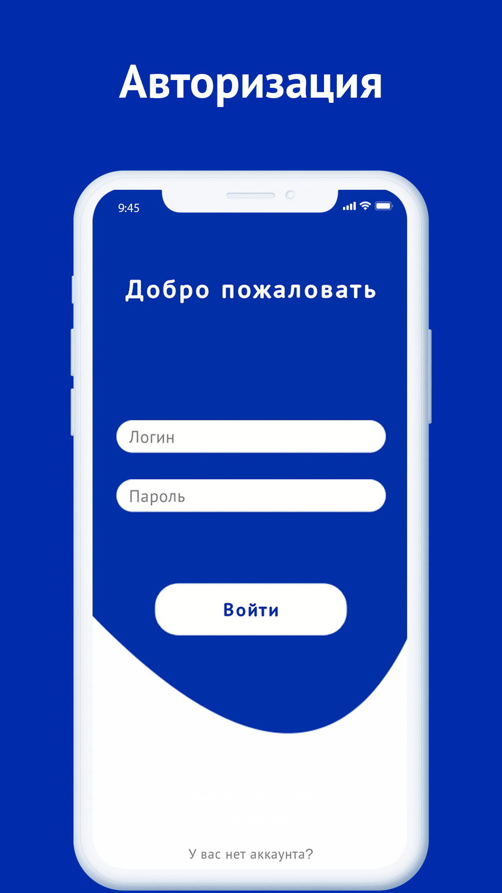
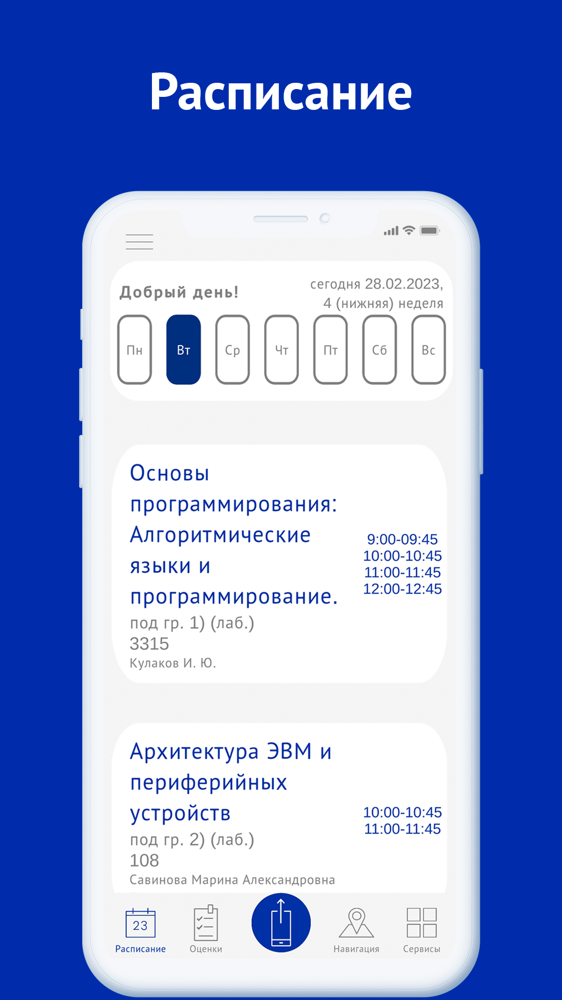
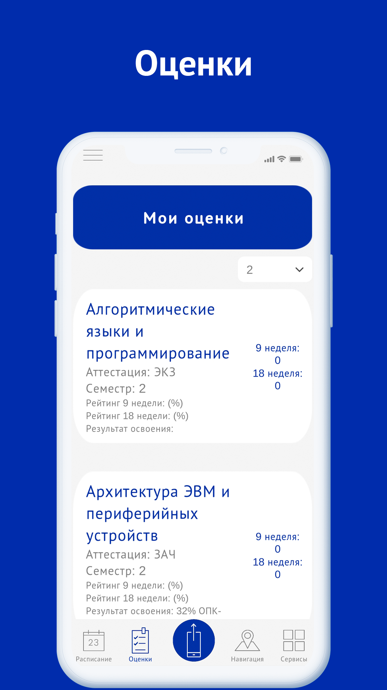
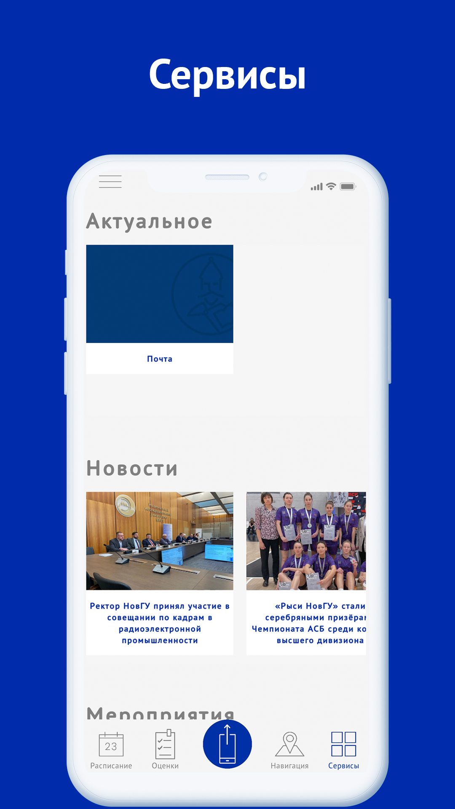
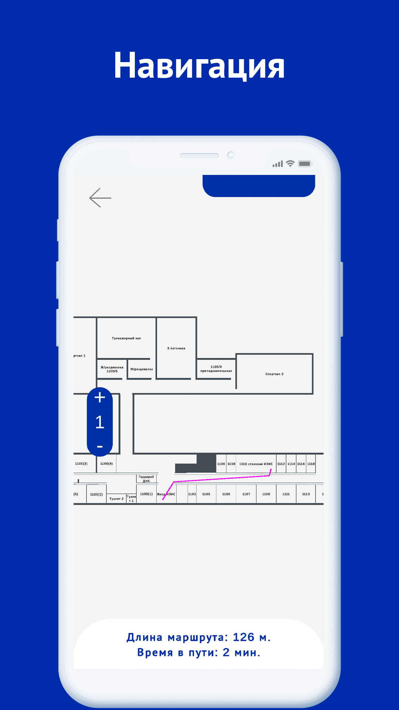

Мой НовГУ
О приложении
Мобильное информационное приложение для студентов и преподавателей университета, которое содержит в себе расписание, оценки, навигацию внутри кампуса и сервисы.
FAQ/Ответы на частозадаваемые вопросы
    Что это за приложение?
“Мой НовГУ” – это приложение, созданное для упрощения взаимодействия студентов и преподавателей с информационной инфраструктурой университета. В приложении функционируют основные опции: расписание (текущее расписание, расписание сессии, уведомления об изменениях), оценки (фиксация хода образовательной деятельности с корпоративного портала), сервисы (новостная лента, быстрый переход в почту). Уже сейчас ведется разработка системы навигации по университету, которую мы планируем протестировать в апреле. Также планируется разработка виртуального пропуска.
Кого мы просим поучаствовать в тестировании?
Мы очень хотим, чтобы в тестировании приняло участие как можно больше пользователей. Приложение функционирует для студентов ВСЕХ форм обучения (очное: вечернее, вечернее ускоренное; заочное: заочное ускоренное). Также работает и для преподавателей. Мы также учитываем различные исключение, например, что студент может обучаться одновременно в нескольких группах.
У меня не получается установить приложение, или заявленные функции не работают, что делать?
Чтобы мы могли оперативно устранить ошибку напишите Сергею Антонову и расскажите о своей ошибке, возможно потребуются дополнительные скриншоты.
Я все протестировал, заявленные функции работают и у меня есть отзыв/предложение об улучшении, куда мне его отправить?
Если все заявленные функции работают и сбоев не произошло, то просим вас дать обратную связь и заполнить форму (https://forms.gle/Z8d4XgzQoQtKPwXS8). Мы проанализируем ваши пожелания/предложения и выпустим фоновое обновление.
Как работает раздел навигации?
В разделе "Навигация" вы сможете взаимодействовать с интерактивной картой главного корпуса университета (1-5 корпуса). Можно менять этажи и просматривать расположение аудиторий. Также вы можете проложить маршрут к нужному кабинету, предварительно указав своё текущее положение. Не сбиться с маршрута вам поможет наш пошаговый помощник, в котором можно поэтапно смотреть прохождение пути.
Свяжитесь с нами
- https://vk.com/my_novsu
Наша группа в ВКонтакте - sergeo.sss@yandex.ru
Почта разработчика